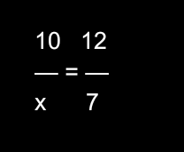

Bem vindo a plataforma, fique a vontade para verificar todos os
conteúdos!
Sua sequência: 1 dias
Como funciona?
Todos os dias as 00:00h são contados os dias que você
acessa a plataforma. Quanto mais dias consecutivos você fica, pode desbloquear fogos
novos. Mas caso essa sequência seja perdida seus fogo e seus dias vão ser
resetados.
Fogos novos podem ser desbloqueados após uma sequência de:
1d
até 5d, 5d até 15d, 15d até 30d, 30d até 60d, Num máximo de 60d até o momento.
Bem Vindo
Confira as novidades
Descubra o que tem de novo, e, receba as principais notificações
importantes!
O Teorema de Tales, também chamado de Teorema de Tales de
Mileto, trata-se de um princípio básico da geometria que relaciona
a proporção entre segmentos de retas paralelas cortadas por duas
transversais. Ele afirma que, se duas retas paralelas são cortadas
por duas retas transversais, então os segmentos de uma das
transversais são proporcionais aos segmentos correspondentes da
outra transversal.
Para Resolveremos precisamos pegar os elementos abaixo da linha
abaixo do 10 temos o X e No
outro lado temos o 12 acima de 7

Para Resolveremos começamos pela parte de baixo7
No 10
7.10 = X.12
70 = 12X
Agora dividimos o 70÷12 que é igual a 5,83.
Resultado: 5,83
Editado pela Ultima vez: há
Por: Equipe Revisão
Prova de 12 De Julho
Essa prova já foi concluída. ✅
Prova sem consulta
Data: 12 De julho - Sexta-Feira
Horario: 7h40 (Duas Aulas)
Valor: 30 Pontos
CONTEÚDOS:
⮕ Adições De Radicais
Isso Inclui Adição, subtração, mulplicação e Divisão
Exercicio 1
A) Exemplo De Radicando iguais
-6√7 + 8√7 -15√7 +2√7 -√7 =
-6 -1 -15 = -21 +2 +8 = +10
-21 +10 = -12
O Resultado é -12√7
Explicação:
Quando os Radicando(parte de dentro da raiz) são iguais, nós apenas somamos os Coeficiente(parte de fora da raiz)
Exemplo para entender melhor
Coeficiente-->4√7<--Radicando
Nós apenas precisamos separar numeros negativos dos positivos e depois somar.
Exercicio 2
B) Radicando Diferentes.
√8 √2 √18
FATORAÇÃO DO 8 8|2 4|2 2|2 1|
2².2
FATORAÇÃO DO 18 18|2 09|3 03|3 01|
2.3²
√8 √18 √2 2².2 2.3² 1√2
2√2 3√2 1√2
O Resultado é 6√2
Explicação
Primeiro você precisa fazer a fatoração dos coeficientes(número fora da raiz) Depois de fazer a Fatoração você vai simplificar com os resultados e depois vai somar tudo. O exemplo acima Mostra isso.
Boa Prova!
Português
Sem provas ou conteúdos acessíveis no momento. Por favor
volte mais tarde!
Ciências
Sem provas ou conteúdos acessíveis no momento. Por favor
volte mais tarde!
Inglês
Sem provas ou conteúdos acessíveis no momento. Por favor
volte mais tarde!
Geografia
Essa prova já foi concluída. ✅
Prova Sem Consulta
Data: 23 De Agosto
Horario: 10h10 (Duas Aulas)
Valor: 50 Pontos
Tempo Restante:
Conteúdos
O conteúdo da Prova vai ser em folhas, por isso no momento só tem uma folha disponivel para a prova e em breve vai ter mais folhas.
Dica
Para enchergar melhor o conteúdo, basta clicar na imagem e você vai ver mais de perto. Para fechar basta clicar em uma parte fora da imagem.
Folha 1 - Europa
História
Essa prova já foi concluída. ✅
Prova Sem consulta
Data: 10 de Julho - Quarta Feira
Horario: 10h10 (Duas Aulas)
Valor: 30 Pontos
CONTEÚDOS
⮕ República Dos Cafeicultores
⮕ Era Vargas
Exercicios Sobre Republica Cafeicultores
Oligarquias no poder
Durante o Império, O governo central impunha seu poder as provincias,nomeando quem iria governá-las. Com o estabelecimento da República, porém essa situação mudou: As familias Oligarquias estaduais, passaram a ter um enorme poder politico.
O Coronelismo
Para Conquistar e manter o poder,os politicos famosos das familias poderosas induziram os eleitores em votar nos candidatos indicado por eles. Esses politicos eram fazendeiros e coronéis da Guarda Nacional.
Esses coroneis conseguiam os votos por meio de troca de favores: Como Alimentos, remédio, proteção ou emprego. Mas eles exigiam que votassem nos candidados indicados por ele. O voto era controlado pelo coronel e é chamado de Voto Cabresto. Na Epoca essa fraude era generalizada: Falsicação de Resultados, Roubos nas urnas, E ate mesmo voto de crianças.
A Política Dos Governadores
Usando as mesmas praticas(Troca de Favores e corrupção eleitoral), as oligarquias ajudavan a eleger deputados e sanadores para presidente da Republica. Que Retribuia o "favor" liberando verbais e dando apoio publico a elas. Esse esquema politico que ligava governos estaduais ao Presidente da Republica Recebeu o nome de POLITICA DOS GOVERNADORES e foi aplicado pelo então presidente Campos Sales que governou de 1898 e 1902. Assim por trocas por meio de alianças e troca de favores que uniam municipios, estados e governo federal. As oligarquias Mantiveram-se no topo na maior parte da Primeira Republica.
O Café continuou na frente
Na Primeira Republica, o café continuou liderando as exportações brasileiras. Com os lucros de vendas obtidos com os Estados Unidos e a Europa, os cafeicultores brasileiros investiam em novas plantações. Com isso Em pouco tempo o Brasil passou a produzir muito mais café do que a quantidade que os paises estrangeiros estavam interessados em comprar. Assim milhões de sacas de café ficaram estocadas nos armazéns brasileiros.
O Convênio De Taubaté
Preocupadoa com as quedas de seus lucros, os cafeicultores ajuda para o governo (São Paulo, Minas Gerais, Rio De Janeiro) os três maiores produtores de café responderam assinando o Convênio De Taubaté, em 1906. Com esse acordo, o governo desses estados comprometian-se a comprar e armazenaras sacas de café excedentes, por meio de Emprestimos obtidos no exterior. A compra do café excedente regulava a oferta e a valorização do produto brasileiro no Exterior. Essa politica atendia aos interesses dos cafeicultores, diante do apoio recebido. Além do café outros proditos se destacaram como como: borracha, algodão, carnes e o Cacau exportados pelo Brasil.
Exercicios Sobre Era Vargas
A Era Vargas
Getúlio Vargas é, talvez a figura nais polemica da historia do Brasil. Para uns, ele foi um ditador a servições das elites, para outros, um estadista preocupado com os mais pobres.
O Governo constitucional de Vargas
Vargas assumiu o governo no momento em que o Brasil sofria ainda os efeitos da Grande Depressão (1929-1933). As falências de empresas, o desemprego e a inflação em alta elevavam a tensão social; esse contexto conturbado facilitou a entrada de ideias auto- ritárias vindas da Europa e a radicalização política. Nesse contexto, surgiram no Brasil dois agrupamentos políticos rivais: os integralistas e os aliancistas.
Os integralistas
Os integralistas, liderados pelo escritor Plinio Salgado, seguiam os princípios do fas- cismo de Benito Mussolini. Em 1932, os integralistas fundaram a Ação Integralista Brasileira (AIB), uma organização política que tinha por lema Deus, Pátria e Família e que defendia:
Um governo autoritário dirigido por um chefe e um partido único;
O predomínio dos interesses da nação sobre os dos indivíduos;
A censura aos meios de comunicação.
Assim como os fascistas, os integralistas faziam uso da violência contra adversários politicos, principalmente contra os comunistas. Apelando para um nacionalismo agressivo, a AIB conseguiu o apoio de membros das camadas médias, do alto clero, do empresariado e das Forças Armadas. A AIB chegou a possuir mais de 100 mil filiados e mais de mil núcleos espalhados pelo país.
Os Aliancistas
Em oposição aos integralistas, foi fundada no Brasil, em 1935, a Aliança Nacional Libertadora (ANL), uma frente popular liderada pelos comunistas, chefiada pelo ex-capitão Luis Carlos Prestes. Os principais pontos do programa da ANL eram o anti-imperialismo não pagamento da divida externa brasileira, a nacionalização das empresas estrangeiras a reforma agrária, e a formação de um governo popular,
O Levante Comunista
Em 5 de julho de 1935, a lider comunista Luis Carlos Prestes lançou um manifesto que propunha a derrubada do governo Vargas e a formação de um governo popular revolucionário. O governo Vargas reagiu ao manifesto fechando a sede da ANI., bem como a maioria dos núcleos que ela tinha pelo pais.
Diante disso, um grupo de sargentos, cabos e soldados comunistas das cidades de Natal, Recife e Rio de Janeiro promoveram um levante armado contra o governo, rotulado à época de Intentona Comunista. Agindo com rapidez, o governo Vargas sufocou os levantes e passou a prender e a torturar os simpatizantes da ANL, comunistas ou não.
As cadeias das principais cidades brasileiras encheram-se de presos políticas, entre os quais estavam o escritor alagoano Graciliano Ramos e a ativista alemă Olga Benário, esposa de Prestes.
Resumo Feito pelo Professor
Primeira Republica
1889 - Os Cafeicultores estão no poder - A Elite de Sp e MG se reveza ao poder.
Caracteristicas: - Coronelismo - Voto de Carabresto - Clentismo - Politica dos Governadores
Governo Provisorio
1930 - Eleição - Sp quer se manter no poder - Getulio Vargas perde a eleição - Outubro: Vargas dopõe o presidente - Vargas fecha as assembleias - Nomeia interventores - Revolta constitucionalista(sp 09/07/1932) - Nova Constituição - Nova Constituição - Vargas eleito para 4 anos (1934- 1938)
Governo Constitucional
- 1934 - Codigo Eleitoral/Justiça do trabalho - Voto Secreto/Feminino - Diteitos Trabalhistas - Vargas Pai dos pobres - Ação integralista brasileira - Aliança Nacionalista Libertadora - Intentona Comunista (1935) - Plano Coben (1937)
Golpe de Vargas
- 1937 Estado novo
Artes
Essa prova já foi concluída. ✅
ARTE CONCEITUAL
1) Quando Começou a divulgação da arte conceitual?:
A Partir dos anos 1970
2) Quais são as principais caracteristicas da arte conceitual?
A Recusa Do Objetudismo e Questionar o Sistema
3) Qual é a importancia (Conceito) na arte conceitual?
Um Publico participativo por ser produzida atravez de metrapos
4) O que Artistas conceituais recusam em relação a os objetos abstratos?
Pra eles são produtos da mente humana ou convenções linguisticas
5) Qual é o objetivo dos artistas conceituais em relação á apressiação tradicional da arte?
Eles são contra uma apreciação puramente contemplatina tradicional da arte, o que se pretende é levantar uma discussão ou ideias, debate do que é a arte.
6) Porque a arte conceitual valoriza um publico participativo?
Porque o expectador não iria ser capaz, então convida o publico a acionar outros dispositivos levantando a necessidade de interatividade.
7) Quem foi Helio Oiticica e porque ele ficou famoso?
Foi um artista conceitual brasileiro que ficou famoso por realizar uma serie de instalações sensoriais, entre elas o Parangolé
8) Descreva as caracteristicas dos parangolés de helio oitica
Eram obras compostas por capas de naturais diversos: Uma serie de texturas e cores destintas
9) O que a obra de “Baba antropofagica” de Lygia clank representa e estimula?
Obra de 1973, era envolvida por fios de linhas que passavam pela boca dos que estavam em volta, formando uma rede sobre o corpo deitado, sendo assim uma das maiores importancias da arte brasileira
10) Qual é a mensagem por tras da obra“Ouvidos” de Cildo meireles?
Fala sobre o processo de colonizacão eu europeu, fazendo uma critica e estimulando e fazendo o espectador refletir sobre aquele movimento na história
11) O que simbolicamente os livros representam na obra “Belief System” De John Dathan?
Os livros são vistos pelo artista não só como fonte de conhecimente e um repositorio de informações mas tambem como fonte de erros e testemunha pariado
12) Quem foi marcel duchamp e qual foi sua contribuicão para a arte conceitual?
Foi um percussor da arte conceitual no momento em que colocou um mictorio no museu e chamou de arte, obra (A fonte) de 1917
13) O que são Ready mades e qual foi sua importancia na arte conceitua?
Era o conceito de arte que o artista quis demonstrar e que levaria mais ao resultado final da obra.
14) Qual foi a grande questão da arte conceitual?
É definir os limites e fronteiras do fazer artistico, ou sujo, ele é baleado na indagação
15) Quais são as principais caracteristicas da arte conceitual mencionadas no texto?
São: Critica ao formalismo e ao mercado de arte, critica do materialismo e a o mercado de consumo, populção da arte como veiculo de comunicação, arte mental e reflexiva, reuptura com a arte classica e formal, e uso de arte classica e formal, e uso de fotografia, textos, videos, imagens, istalações
16) Quando foi a arte conceitual chegou no Brasil?
Chegou no Brasi em 1970
17) Quais são alguns artistas conceituais brasileiros?
Cildo Meireles, Arthur Barrio, Carlos Fajado,José Resende Filho, Mia schendel, Waltercio Caldas
18) Como a arte conceitual se diferencia da arte classica?
A arte conceitual se diferencia da arte clássica ao priorizar a ideia ou conceito sobre a habilidade técnica e a estética, desafiando as formas tradicionais e a materialidade da obra, enquanto a arte clássica foca na beleza, na técnica e na representação realista ou idealizada.
19) Quais são os tipos de midia e formas de expressão usadas na arte conceitual?
Uso de Fotografias, textos, videos, instalações e perfomaces
20) Como a arte conceitual critica o formalismo e o mercado da arte
A arte conceitual critica o formalismo ao priorizar a ideia sobre a forma e desafia o mercado da arte ao criar obras imateriais e efêmeras que resistem à comercialização.
Editado pela Ultima vez: há
Por: Equipe Revisão
9b_2k24_portinho
Turma da resenha 🙅🏻♂️🤷🏻♂️
siga nas redes sociais oficiais da turma! 🤍